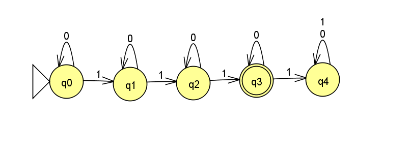

Lecture Extra
This page will include any extra material from lectures.
End-of-class Surveys
Latest End-of-class Survey: Mon 10/19
Previous:
In-Class Exercises
1 Oct 5, 2020: Context-free Grammars (CFGs)
1.1 Context-free Grammar Exercise
Give a CFG for the language \{w\mid w\textrm{ starts and ends with the same symbol}\}, where \Sigma = \{\texttt{0},\texttt{1}\}.
1.2 Solution
G = (V,\Sigma,R,S), \textrm{ where } V = \{T,C^\prime,C\}, \Sigma = \{\texttt{0},\texttt{1}\}, S = T, \textrm{ and } R =
T \rightarrow \texttt{0}C^\prime\texttt{0} \mid \texttt{1}C^\prime\texttt{1}\mid \varepsilon
C^\prime \rightarrow C^\prime C\mid\varepsilon
C \rightarrow \texttt{0}\mid\texttt{1}
1.3 Solution Explained
The part in the middle can be any string in the alphabet. So we have rule C, which can be any terminal.
Rule C^\prime then repeats C any number of times.
Finally, rule T ensures that the string starts and ends with the same character by having one right-hand side for each terminal.
2 Sept 28, 2020: Regular Expressions and Homomorphisms
2.1 Regular Expressions
We proved that a language is regular if and only if some regular expression describes it.
Recall the formal definition (Def 1.52) of Regular Expressions from the textbook:
a for some a\in\textrm{alphabet }\Sigma,
the empty string \varepsilon,
the empty set \emptyset,
R_1 \cup R_2, sometimes written R_1\mid R_2, where R_1 and R_2 are regular expressions,
R_1 \circ R_2, sometimes written R_1R_2, where R_1 and R_2 are regular expressions,
R_1^*, where R_1 is a regular expression.
2.2 Homomorphism Definition
Define a homomorphism to be a function H:\Sigma\rightarrow \Gamma from one alphabet to another.
any string w: H(w) = H(w_1)\ldots H(w_n), where w = w_1\ldots w_n, and each w_i\in\Sigma;
any language A: H(A) = \{H(w)\mid w\in A\};
and any regular expression R: H(R) = H(L(R)), where L(R) is the language described by R.
2.3 Homomorphism Closure
Homomorphisms are closed under regular languages.
In other words, for any language A, if A is regular, then H(A) is also regular.
2.4 Proof of Homomorphism Closure
Since we know that a language is regular if and only if some regular expression describes it, we will prove that homomorphisms are closed under regular languages by induction on the definition of regular expressions.
The proof has six cases:
Base case 1: a regular expression a\in\Sigma describes the language \{a\}, so H(a) describes the language \{H(a)\}, which is regular because it’s finite;
Base case 2: H(\varepsilon) = \varepsilon, which describes the regular language \{\varepsilon\};
Base case 3: H(\emptyset) = \emptyset, which describes the regular language \{\};
Inductive step 1: We must show that H(R_1 \cup R_2) is regular.
Inductive hypothesis (IH): We may assume that H(R) is regular to prove that H(R^\prime) is regular, for R^\prime larger than R.
H(R_1 \cup R_2) = H(R_1) \cup H(R_2), from the definition of homomorphisms above;
H(R_1) and H(R_2) are regular, by the IH;
then H(R_1) \cup H(R_2) is regular, because union is closed under regular languages;
therefore H(R_1 \cup R_2) is regular.
Inductive step 2: We show that H(R_1 \circ R_2) is regular, using the same steps as the union case.
Inductive step 3: We show that H(R_1^*) is regular, using the same steps as the union case.
\blacksquare |
3 Sept 14, 2020: DFAs
3.1 Question
Design a DFA M that recognizes language A:
A = \{w\mid w\textrm{ has exactly three } 1\textrm{s}\}
Assume \Sigma = \{0,1\}.
Q is a finite set called the states,
\Sigma is a finite set called the alphabet,
\delta:Q\times\Sigma\rightarrow Q is the transition function,
q_0\in Q is the start state, and
F\subseteq Q is the set of accept states.
3.2 Answer

Each state in the machine represents how many 1s have been seen "so far".
Seeing another 1 moves to the next state.
Seeing a 0 keeps the machine in the same state.
Accept if exactly three 1s have been seen.
formally:
M = (Q,\Sigma,\delta, q_{start},F) where:Q = \{q_0,q_1,q_2,q_3,q_4\}
\Sigma = \{0,1\}
- \delta =
0
1
q0
q0
q1
q1
q1
q2
q2
q2
q3
q3
q3
q4
q4
q4
q4
q_{start} = q_0
F = \{q3\}